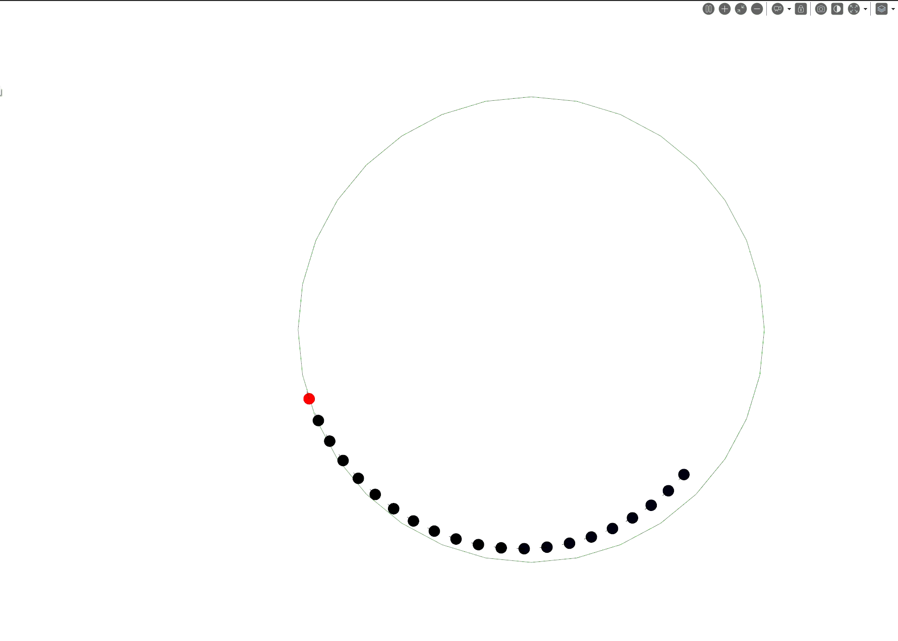
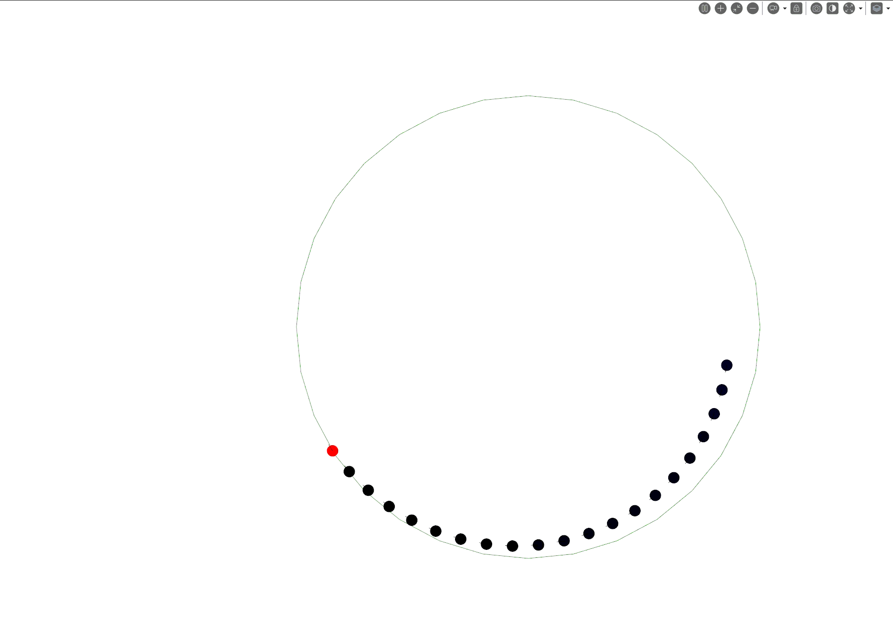

Deux chantiers exploratoires
Perception et recalage · contrôle générique d'une flotte de robots différentiels à perception externalisée.
Le leader freine, la perturbation remonte le convoi et s'amplifie : le fil rouge du projet.
Les deux chantiers se mènent à 100 % sans GAMA. GAMA n'est que le contexte et la cible d'intégration finale : la perception et le contrôle se développent et se mesurent avec un banc d'essai local, l'état cible venant de n'importe quelle source (script local, trajectoire, mini-modèle de convoi). Les deux chantiers sont indépendants l'un de l'autre.
01Contexte du projet
TANGO cherche à rendre une simulation multi-agents tangible : au lieu de projeter des agents virtuels sur une maquette, on les incarne avec de vrais robots mobiles qui se déplacent sur un modèle physique. Une simulation GAMA pilote en temps réel une flotte de petits robots, observe leur position réelle, et corrige en continu l'écart entre le monde simulé et le monde réel.
Vue d'ensemble de la boucle. Les deux chantiers sont encadrés ; l'état cible peut venir de GAMA (contexte) ou d'un simple script :
L'état cible provient de GAMA (contexte) ou d'un script local ; tout le reste est indépendant.
Plateforme de simulation : GAMA (développée notamment à l'UMMISCO / IRD)
Antériorité très proche, le Robotarium (Georgia Tech), testbed multi-robots à perception externalisée par caméra fixe : article IEEE CSM 2020, site
Hypothèses structurantes
Ces deux hypothèses conditionnent tout le reste et expliquent la forme des deux chantiers :
Perception entièrement externalisée. Les robots sont des plateformes « bêtes » : leurs mesures internes (odométrie, position embarquée) ne sont pas une source de vérité. Un ordinateur relié à une caméra fixe (ou éventuellement un smartphone) observe la scène, détecte les robots (probablement via des AprilTags), estime leur état, calcule les commandes et les envoie. Les robots deviennent de simples exécutants.
Frugalité et généricité. On privilégie des solutions peu coûteuses, robustes et reproductibles, sur une machine modeste. Le cadre doit rester largement indépendant du matériel : brancher une flotte de robots différentiels quelconques sans réécrire d'architecture ni régler à la main chaque plateforme. Matériel de référence : châssis imprimés en 3D, Raspberry Pi Zero 2 W, Wi-Fi.
Nature exploratoire
L'objectif n'est pas d'inventer de nouveaux algorithmes de vision ou de contrôle, mais d'identifier et comparer les approches existantes les mieux adaptées à un framework générique, selon quatre critères récurrents : précision, robustesse, simplicité de mise en œuvre, coût de calcul.
Principe directeur · déploiement zéro-configuration
Le cadre doit pouvoir se déployer facilement dans des contextes très différents. On écarte donc toute solution qui suppose une position de caméra donnée (hauteur, angle, vue strictement verticale) ou qui repose sur des contrôleurs pré-réglés (gains PID fixés à la main pour un robot ou une surface). La transformation entre la caméra et le monde, ainsi que le comportement propre de chaque robot, doivent être récupérés automatiquement au démarrage ou adaptés en ligne, jamais codés en dur pour un déploiement particulier. C'est le filtre principal pour trancher entre deux approches concurrentes tout au long des deux chantiers.
02Cas d'étude de référence : le trafic en convoi
Le modèle testé actuellement est un modèle de trafic : un convoi de robots qui se suivent. En introduisant une petite probabilité de freinage sur le leader, on observe qu'une perturbation locale se propage et s'amplifie vers l'arrière du convoi, jusqu'à provoquer des arrêts. Objectif à court terme : reproduire en réel ce résultat de simulation, très classique.
GIF à insérer assets/convoi_stable.gif

Convoi stable : la perturbation du leader s'amortit en remontant le convoi.
GIF à insérer assets/convoi_instable.gif

Convoi instable : la perturbation se propage et s'amplifie vers l'arrière, jusqu'aux arrêts.
Ce phénomène est un grand classique de la dynamique du trafic ; le nommer précisément aide à retrouver la littérature :
Modèle de Nagel-Schreckenberg (NaSch, 1992). Automate cellulaire minimal à 4 règles par pas de temps : accélération, freinage pour respecter l'espace disponible, randomisation (probabilité p de ralentir d'un cran, exactement votre « petite probabilité de freiner »), puis déplacement. Reproduit les phantom jams. Vulgarisation : mysimulator.uk ; revue : Cellular Automata Models of Road Traffic (arXiv).
Stabilité de chaîne (string stability). Cadre théorique décrivant si une perturbation de vitesse du leader est amortie ou amplifiée en remontant le peloton. Le ratio d'amplitude arrière sur avant Λ résume le comportement (Λ<1 stable, Λ>1 instable). String stability in traffic flows (ScienceDirect).
Expérience de Sugiyama (2008). 22 voitures sur un anneau à vitesse et espacement constants ; une onde d'arrêt spontanée apparaît en quelques minutes. L'équivalent physique presque exact de ce que TANGO veut reproduire avec des robots.
Pourquoi c'est le bon fil rouge
Reproduire fidèlement une amplification impose (a) une localisation précise et à faible latence pour distinguer une vraie propagation d'un artefact de mesure (chantier 1), et (b) un contrôle fidèle et homogène entre robots pour que les écarts observés viennent de la dynamique simulée, pas de robots mal réglés (chantier 2). C'est un excellent test d'intégration de bout en bout.
03Chantier 1 · Reconstruction de l'état réel
Perception, calibration et recalage géométrique.
Objectif
Construire une représentation cohérente reliant le monde physique (les robots sur le terrain) à une éventuelle simulation physique, avec une cohérence temporelle entre perception et commande. À chaque instant, le système reconstruit l'état réel des robots vus par la caméra et le convertit entre référentiels. Le terrain n'est pas une surface dédiée mais une aire quelconque, probablement délimitée par des AprilTags de bordure. Tout se développe avec un terrain, une caméra et un script local.
Sous-problèmes
Détection et identification des robots dans l'image.
Estimation de pose : position (x, y) et orientation (θ) de chaque robot.
Délimitation et recalage du terrain : des AprilTags de bordure (positions relatives connues) définissent l'aire de jeu et le repère monde, sans supposer de forme ni de taille fixes.
Calibration entre caméra et monde physique : passer des pixels aux coordonnées métriques du terrain.
Transformations de référentiels : des coordonnées image aux coordonnées physiques, puis (in fine) vers GAMA.
Synchronisation temporelle : accorder les cadences caméra et boucle de commande, compenser les latences (la « boucle de correction de dérive » du projet).
Chaîne de référentiels à établir. Le dernier maillon vers GAMA est une simple similitude, ajoutée en fin de parcours.
Pistes à comparer
Marqueurs visuels (détection, identification, pose) : le cœur du chantier.
AprilTag (APRIL Lab, Univ. of Michigan) : marqueurs conçus pour la robotique, robustes à basse résolution, éclairage inégal et rotation, pose 6-DOF depuis un seul marqueur d'échelle connue. Bibliothèque C légère : AprilRobotics/apriltag (familles tagStandard41h12 ou tag36h11). Articles : Olson 2011, AprilTag 2 (2016).
ArUco / ChArUco (intégré à OpenCV) : marqueurs carrés binaires, pose via detectMarkers et solvePnP, très facile en Python. Tutoriel officiel. OpenCV sait raffiner les coins avec la méthode AprilTag (CORNER_REFINE_APRILTAG) : comparer les deux familles dans un même pipeline est simple. Ordre de grandeur : environ ±5 à 10 mm à 1 m pour un marqueur de 10 cm bien calibré.
Autres familles pour la revue (ARTag, reacTIVision), probablement hors périmètre.
Calibration de caméra, automatique et sans position supposée.
Intrinsèques et distorsion via OpenCV calibrateCamera (échiquier ou ChArUco) : propres à l'optique, donc faits une seule fois et réutilisables d'un déploiement à l'autre. Voir le tutoriel calibration.
Caméra à position quelconque, terrain quelconque : on ne suppose ni hauteur, ni angle, ni vue strictement verticale, ni forme de terrain. La transformation entre la caméra et le plan du terrain (une homographie) est estimée automatiquement au démarrage, typiquement à partir des AprilTags de bordure qui délimitent l'aire de jeu (leurs positions relatives connues fixent le repère monde et l'échelle), puis vaut pour toute la session. Une vue oblique est acceptable. Voir LearnOpenCV (homographie) et findHomography.
Synchronisation temporelle. À instrumenter : horodater les détections, mesurer la latence entre caméra et commande, choisir le mode d'entraînement de la boucle, prévoir une compensation de retard.
Critères d'évaluation
Précision de localisation.
Indépendance vis-à-vis de la position et de l'angle de la caméra (calibration automatique au démarrage).
Robustesse : éclairage, occlusions, flou de mouvement.
Simplicité de mise en œuvre.
Coût de calcul : cadence tenable sur une machine modeste.
Facilité d'intégration.
04Chantier 2 · Couche générique de contrôle
Objectif
Transformer un état cible (de n'importe quelle source : trajectoire codée en dur, générateur de consignes, mini-modèle de convoi local) en commandes moteur permettant à une grande variété de robots différentiels de reproduire le comportement voulu. Le système travaille en boucle fermée : la caméra estime l'état réel en continu et les commandes sont recalculées à chaque itération pour réduire l'écart.
La boucle de correction : l'état réel observé ramène en permanence le robot vers l'état cible.
Les mises à jour étant fréquentes, le problème relève du suivi (path following) plutôt que du path planning classique : la trajectoire est corrigée en permanence à partir de l'état observé. (Distinguer le path following, suivre une géométrie, du trajectory tracking, suivre une position paramétrée par le temps.)
La contrainte centrale : la généricité
C'est le vrai défi. Un contrôleur à réglage manuel, typiquement un PID dont les gains doivent être ajustés pour chaque robot, chaque surface, chaque déploiement, est incompatible avec l'objectif : brancher une nouvelle flotte sans réglage manuel. On n'utilise donc pas de PID pré-configuré transporté d'un site à l'autre, et aucun gain n'est fixé à la main au déploiement. Atout majeur : la caméra fournit une vérité terrain externe, ce qui permet d'identifier directement la relation entre commande et mouvement réel de chaque robot, sans capteur embarqué.
Deux approches à comparer
1. Contrôle adaptatif (ajustement en ligne). Le contrôleur estime en continu le comportement propre de chaque robot pendant qu'il roule et s'y ajuste, sans réglage préalable. C'est la voie la plus robuste aux conditions changeantes (batterie qui faiblit, sol différent, usure), puisqu'il se ré-adapte en permanence. Familles à couvrir : MRAC (Model Reference Adaptive Control), mode glissant adaptatif, estimation en ligne des paramètres, backstepping (de la cinématique vers la dynamique). Point de vigilance : le coût de calcul sur Raspberry Pi.
2. Phase d'auto-calibration au lancement. Avant utilisation, on déclenche une courte routine automatique : chaque robot exécute une séquence de mouvements prédéfinie, la caméra observe sa réponse, et le système identifie tout seul son modèle (relation commande vers mouvement, échelle des roues, biais gauche/droite). Un contrôleur standard s'appuie ensuite sur ces paramètres identifiés. Avantage : plus léger à l'exécution ; limite : suppose que les paramètres restent stables pendant la session.
Les deux se combinent bien : une auto-calibration au lancement pour partir juste, complétée d'une adaptation en ligne légère pour absorber les dérives.
Pistes et références
Baseline géométrique (référence à battre) : Pure Pursuit, suivi par point d'anticipation (lookahead), simple et éprouvé sur robots différentiels. Purdue SIGBots, exemple MATLAB. Son lookahead reste un paramètre à régler, donc à évaluer côté généricité.
Capacité à fonctionner sur des robots variés sans réécriture.
Nécessité ou non d'une calibration préalable (durée, degré d'automatisation).
Robustesse aux variations : batterie, sol, usure, dispersion entre exemplaires.
Coût de calcul compatible avec la machine hôte.
Degré d'intervention humaine au déploiement (objectif : zéro).
En résumé, ce chantier ne consiste pas seulement à trouver un bon contrôleur, mais à concevoir une couche de contrôle générique capable de piloter une grande variété de robots différentiels avec un minimum de configuration, en s'appuyant uniquement sur la perception externe.
05Première étape concrète : reproduire le convoi en réel
Un chemin minimal de bout en bout qui réunit les deux chantiers (développés séparément) et fournit un premier démonstrateur mesurable, le modèle de convoi tournant dans un simple script local.
Perception (chantier 1) : caméra fixe observant le terrain (délimité par des AprilTags de bordure), un AprilTag/ArUco par robot, homographie image vers terrain estimée au démarrage, puis exposition des poses (x, y, θ) horodatées.
Générateur d'états cibles : le modèle de convoi (type Nagel-Schreckenberg, freinage probabiliste du leader) tourne dans un script local qui reçoit les poses réelles et émet les états cibles.
Contrôle (chantier 2) : pour chaque robot, un contrôleur de suivi (baseline Pure Pursuit, puis variante adaptative ou auto-calibrée) ramène le robot vers son état cible.
Mesure : enregistrer vitesses et positions, puis vérifier que la perturbation du leader se propage et s'amplifie vers l'arrière (ratio de string stability Λ), comme dans la simulation.
Cette boucle donne un critère de succès clair et objectivable, et met en évidence très tôt les points durs de latence (chantier 1) et d'hétérogénéité inter-robots (chantier 2).